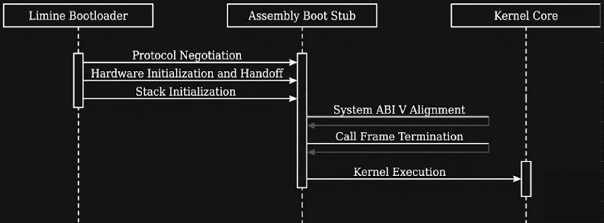

BOOT COMPONENTS
{kind=link}

Visual representation of the hardware handoff from boot.S to kernel_main().
boot.S (Boot Assembly & Kernel Handoff)
Overview
The boot.S file serves as the absolute entry point of the Math Unikernel. When the computer boots, the Limine bootloader initializes the hardware into 64-bit Long Mode, but it cannot directly execute C code because the C runtime environment (specifically, the stack) does not exist yet. This minimal assembly file acts as a trampoline. Its sole purpose is to declare compatibility with the Limine boot protocol, allocate a safe region of physical memory to act as the kernel’s stack, align that stack to the strict rules of the x86_64 architecture, and safely pass execution control over to the C-level kernel_main function.
System Integration & Bootloader Handshake
The integration between boot.S and kernel.c relies entirely on the Limine Boot Protocol. * The Handshake: boot.S places a limine_base_revision structure into a specialized ELF section (.requests) using hardcoded magic numbers. This tells the bootloader that the kernel understands the modern Limine protocol. * Feature Requests: Over in kernel.c, the kernel makes further modular requests (Memory Map, HHDM offset, Kernel Address, and Framebuffer) placing them in the same .limine_requests section. Limine reads these sections before the kernel even boots and prepares the requested data. * The Handoff: Once Limine jumps to _start in boot.S, the assembly stub prepares the CPU and calls kernel_main. The very first thing kernel_main() does is verify that Limine successfully answered the base revision request (LIMINE_BASE_REVISION_SUPPORTED) and provided the requested pointers. If successful, the C kernel proceeds to initialize the GDT and IDT.
Execution Flow Example
The transition from hardware to C code is strictly linear and never returns to the bootloader.
// 1. Hardware executes _start in boot.S
// 2. boot.S sets up the stack and calls kernel_main()
void kernel_main(void) {
// 3. Verify the bootloader handshake was successful
if(LIMINE_BASE_REVISION_SUPPORTED && memmap_request.response != NULL) {
// Proceed with hardware initialization
gdt_init();
idt_init();
// ...
}
// 4. Enter the infinite Math Unikernel state machine
do {
// POLLING -> EXECUTING -> EXTRACTING
} while(running);
// 5. If the loop breaks, halt the CPU
hcf();
}
// 6. If hcf() somehow fails and kernel_main returns,
// boot.S catches it in the 'halt' safety net.
API Reference
Limine Requests
limine_base_revision: Placed in the .requests section. Contains two 64-bit magic numbers (0xf95623d0d23a4821 and 0x27a1a039145b6951) and requests protocol Revision 0. This is the foundational handshake that allows all subsequent Limine requests in kernel.c (like memmap_request and framebuffer_request) to function.
Memory Allocation (BSS Section)
stack_bottom & stack_top: The assembly file statically allocates a 32 Kilobyte (32768 bytes) block of uninitialized memory in the .bss section to serve as the kernel’s execution stack. It is aligned to a 64-byte boundary to optimize cache line performance. Because x86 stacks grow downwards, stack_top represents the starting memory address.
Execution Routines
_start: The global entry point explicitly targeted by the Limine bootloader.Behavior:
Loads the address of stack_top into the CPU’s Stack Pointer register (%rsp).
Executes andq $-16, %rsp to align the stack strictly to a 16-byte boundary. Note: This is a strict requirement of the System V AMD64 ABI; C functions utilizing SIMD instructions (like AVX/SSE) will crash if the stack is not aligned.
Clears the Base Pointer register (xorq %rbp, %rbp) to denote the absolute top of the call stack frame, ensuring stack traces terminate cleanly.
Executes the C function call kernel_main.
halt: A critical safety net located immediately after the call kernel_main instruction.Behavior: The unikernel is designed to run infinitely inside kernel_main(). However, if the C code unexpectedly exits or returns, execution will fall into this routine. It disables maskable interrupts (cli), halts the CPU (hlt), and loops infinitely (jmp halt) to prevent the processor from executing garbage memory and hard-crashing.